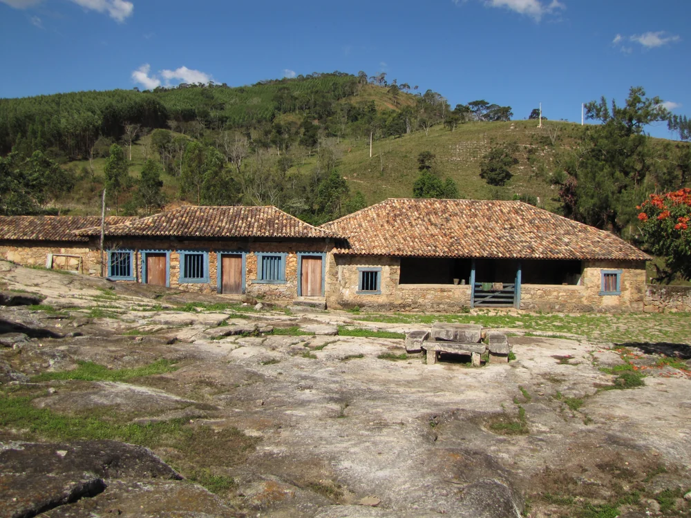

A precisão técnica que a sua terra
e o seu legado exigem.
Pareceres Técnicos de Avaliação Mercadológica (PTAM) e laudos periciais emitidos por Corretor Perito Especializado em Imóveis Rurais (CNAI / CRECI-MG), em estrita conformidade com a ABNT NBR 14653-3 e Resolução COFECI nº 1.066/2007. Segurança jurídica e mercadológica para crédito rural, inventários, partilhas e negociações de fazendas em Minas Gerais.
No agronegócio, uma avaliação sem rigor pericial custa caro.
Estimativas informais de mercado e opiniões sem embasamento em perícia imobiliária não resistem à análise de comitês de crédito bancário nem ao crivo do juiz em uma partilha de herança.

! Garantias Bancárias Travadas
Instituições financeiras exigem laudos e pareceres técnicos alinhados à NBR 14653-3 e às normas do BACEN. Uma avaliação superficial paralisa a liberação do crédito rural e faz o produtor perder a janela de plantio da safra.
! Inventários e Partilhas Paralisados
Dividir terras com base em opiniões informais gera litígios prolongados entre herdeiros. O Parecer Técnico de Avaliação Mercadológica (PTAM) emitido por perito credenciado é a base justa e incontestável para partilhas judiciais ou amigáveis.
! Deságio Expressivo na Negociação
Avaliar a fazenda apenas pela área em hectares, sem precificar cafezais formados, recursos hídricos, outorgas e benfeitorias, faz o proprietário deixar expressivas quantias na mesa de negociação.
! Insegurança Fiscal e Fundiária
Inconsistências entre a área física real, a matrícula cartorária e a declaração de ITR/VTN geram autuações fiscais e contingências fundiárias perante a Receita Federal e municípios.
Laudos periciais e pareceres técnicos de mercado (PTAM).
Trabalhos periciais especializados, estruturados para as exigências formais de bancos, cartórios, juizados e acordos familiares.
Crédito Rural & Garantias
Pareceres e laudos aceitos pelo Banco do Brasil, Sicoob, Sicredi, bancos privados, Fiagros e operações de CPR com total aderência às exigências do BACEN.
Inventários & Partilhas
Avaliação técnica e imparcial para partilhas judiciais ou extrajudiciais, divisão equilibrada de glebas e apuração equitativa de herança familiar.
Compra, Venda & M&A
Determinação do valor real de mercado com base em dados de transações reais na microrregião, oferecendo segurança irrestrita para compradores e vendedores.

Holding & Integralização
Laudos de avaliação para integralização de imóveis rurais no capital social de holdings familiares, reorganização societária e doações com usufruto.
As variáveis que determinam o valor real de uma fazenda.
Avaliações mercadológicas e pareceres técnicos elaborados em estrita conformidade com a norma ABNT NBR 14653-3 e com a Resolução COFECI nº 1.066/2007 (Lei Federal nº 6.530/1978).
Terra Nua (VTN)
Classificação do solo por classes de capacidade de uso (I a VIII), relevo, declividade, teor de argila e potencial de mecanização.
- Aptidão agrícola e florestal
- Declividade e suscetibilidade à erosão
- Distância a rodovias e escoamento
Benfeitorias Reprodutivas
Culturas agrícolas perenes (cafezais), pastagens formadas e povoamentos florestais avaliados pelo ciclo produtivo e custo de implantação.
- Lavouras de café em produção
- Forrageiras e capacidade de suporte animal
- Maciços florestais (eucalipto/pinus)
Construções & Edificações
Estruturas físicas avaliadas pelo Método de Custo de Reprodução, com depreciação técnica criteriosa (critério de Ross-Heidecke).
- Sedes, vilas e alojamentos
- Currais com brete, balança e ordenha
- Galpões, silos, cercas e eletrificação
Segurança Hídrica & Outorgas
A disponibilidade de água define o teto produtivo da terra. Investigamos vazão perene e regularidade das outorgas junto ao IGAM e ANA.
- Nascentes preservadas e cursos d'água
- Capacidade de represamento e açudes
- Outorgas ativas para pivôs e irrigação
Conformidade Fundiária & CAR
Confrontação minuciosa entre a matrícula registrada em cartório, o memorial descritivo e a área física real ocupada no imóvel.
- Conferência da certidão de matrícula
- Cadastro Ambiental Rural (CAR) e Reserva Legal
- Georreferenciamento certificado (SIGEF/INCRA)
Tratamento Amostral de Mercado
Tratamento de negócios reais e ofertas vigentes na microrregião, homogeneizadas por modelos matemáticos e inferência de mercado.
- Método Comparativo Direto de Dados
- Homogeneização de atributos físicos
- Grau de fundamentação e precisão auditáveis
De Barroso para todo o estado de Minas Gerais.
Com sede estratégica no Campo das Vertentes, atendemos com agilidade tanto as propriedades regionais quanto grandes operações no interior mineiro.
Campo das Vertentes & Sul de Minas
Atendimento direto e vistorias rápidas em fazendas de leite, cafezais, pecuária e propriedades familiares.
Barroso, São João del-Rei, Barbacena, Tiradentes, Prados, Dores de Campos, Lavras, Varginha, Pouso Alegre, Alfenas e Juiz de Fora.
Belo Horizonte & Nova Lima
Atendimento personalizado a famílias tradicionais, proprietários residentes na capital e escritórios de advocacia que coordenam inventários e holdings.
Belo Horizonte, Nova Lima, Contagem, Betim, Sete Lagoas, Pará de Minas, Divinópolis e Bom Despacho.
Triângulo Mineiro & Noroeste
Missões periciais programadas para fazendas de alta extensão com lavouras de grãos, pivôs de irrigação e confinamento bovino intensivo.
Uberlândia, Uberaba, Patos de Minas, Araguari, Paracatu, Unaí, João Pinheiro e Buritis.
Da análise preliminar à entrega do parecer conclusivo.
Um processo transparente, com cronograma estabelecido e sigilo irrevogável em cada etapa.
Triagem Documental
Análise prévia da matrícula, CAR e localização para definir o enquadramento metodológico e apresentar a estimativa clara de honorários, sem custos iniciais.
Vistoria Pericial In Loco
Inspeção presencial minuciosa na fazenda: vistoria de divisas, caracterização dos solos, pastagens, cafezais, construções e recursos hídricos com fotos georreferenciadas.
Emissão do PTAM com Selo CNAI
Tratamento dos dados de mercado, elaboração do Parecer Técnico de Avaliação Mercadológica (PTAM) conclusivo com Selo Certificador oficial do CNAI/COFECI e assinatura digital ICP-Brasil.
Solicitar Estimativa de Honorários e Prazo
Preencha os dados básicos da propriedade para receber a orientação preliminar do nosso perito avaliador imobiliário rural.
Perguntas frequentes sobre a avaliação pericial.
Esclarecimentos diretos sobre validade jurídica, emissão do PTAM e prazos de entrega.
O laudo e PTAM emitidos são aceitos pelo Banco do Brasil e bancos privados?
Sim. Nossos pareceres técnicos atendem rigorosamente a todas as exigências da norma ABNT NBR 14653-3 e da Resolução COFECI nº 1.066/2007, elaborados por Corretor Perito Avaliador Imobiliário Rural devidamente inscrito no CNAI (Cadastro Nacional de Avaliadores Imobiliários) e CRECI-MG, com aposição do Selo Certificador oficial do COFECI.
Qual a diferença entre o PTAM de um Corretor Perito Rural e uma opinião de corretor comum?
Uma simples opinião de corretor é apenas uma estimativa informal de preço sem metodologia científica e sem validade perante bancos ou juizados. O Parecer Técnico de Avaliação Mercadológica (PTAM) é um trabalho pericial formal regulamentado pela Lei Federal nº 6.530/1978 e Resolução COFECI nº 1.066/2007, emitido exclusivamente por Corretor Perito inscrito no CNAI. Ele segue os critérios rigorosos da ABNT NBR 14653-3, com vistoria in loco, pesquisa amostral de mercado na microrregião, tratamento comparativo direto e Selo Certificador oficial.
A vistoria presencial na fazenda é obrigatória?
Sim. A vistoria in loco é uma exigência expressa da ABNT NBR 14653-3 e das normas do COFECI. Ela garante a constatação real do estado de conservação das edificações, a sanidade dos cafezais e pastagens, as confrontações de divisa e os mananciais hídricos, blindando a avaliação contra contestações judiciais ou exigências bancárias.
Qual é o prazo médio para conclusão do laudo ou PTAM?
Em média, o Parecer Técnico de Avaliação Mercadológica (PTAM) conclusivo é entregue entre 7 e 20 dias úteis após a realização da vistoria presencial e o recebimento das certidões de matrícula e CAR da propriedade. Havendo prazos judiciais ou janelas de crédito rural prioritárias, o cronograma é previamente alinhado.
Como são calculados os honorários da avaliação pericial?
Os honorários são dimensionados com base na complexidade técnica do imóvel: extensão da área em hectares, relevo, diversidade de benfeitorias reprodutivas e localização geográfica, em conformidade com as tabelas de referência do CRECI-MG. Preenchendo o formulário nesta página, apresentamos a estimativa formal sem qualquer custo inicial.
Como é garantido o sigilo das informações da minha família?
O sigilo é o alicerce fundamental da atuação da Raízes. Todos os dados relativos a matrículas, valores de mercado e acordos sucessórios familiares são protegidos por compromisso formal de confidencialidade e estrita observância à Lei Geral de Proteção de Dados (LGPD).
Honrando o passado. Preservando o legado.
A segurança jurídica e econômica da sua terra começa com uma avaliação pericial rigorosa, independente e fundamentada.